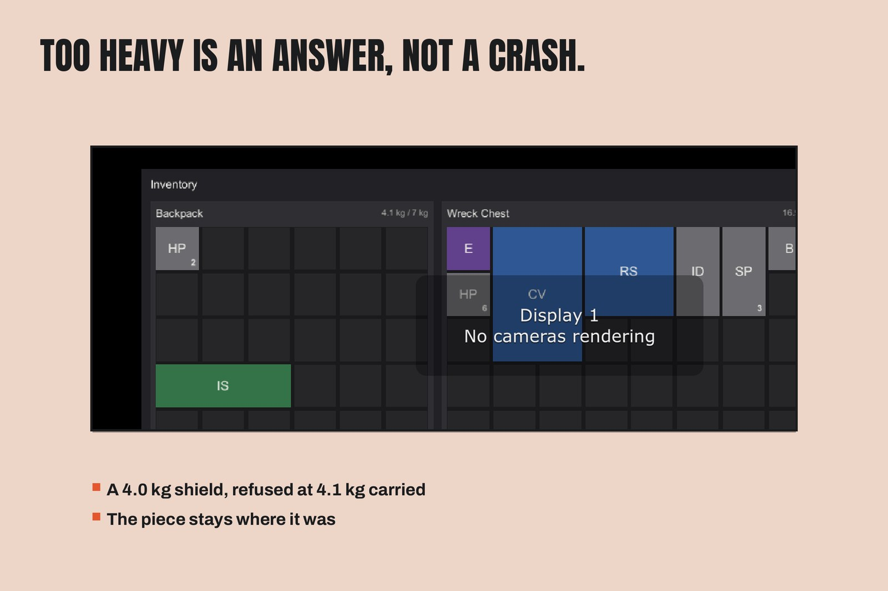

Containers and Weight
An InventoryContainer is a MonoBehaviour that owns one grid:
| Field | Meaning |
|---|---|
| Kind | Backpack / Chest / Generic (labels only) |
| Container Id | Unique string; the save-matching key. Duplicates are a validation warning, not an error. |
| Display Name | The panel title players see ("Backpack", "Wreck Chest"). |
| Grid Width / Height | Cells. The demo backpack is 6×5; the demo chest is 8×5. |
| Max Weight | Kilograms. 0 = unlimited. |
| Starting Items | Definition + count pairs, applied exactly once at initialize — never duplicated by a re-initialize or after a restore. |
Weight rules
TotalWeightis the sum over placed stacks (unit weight × count).CountThatFits(stack)answers how many units of a stack fit under the remaining weight budget and free space — the transfer and drag systems use it, so a partial move moves exactly the fitting part and leaves the remainder in the source.- A transfer or drop that fits nothing is refused whole: nothing moves, and the status line names the reason ("Too heavy for the Backpack." / "No room in the Backpack.").

Transfers
ItemTransfer.TransferAll(source, destination) moves everything that
fits, fit-checked per stack, and returns the unit count moved — the
demo's Take All to Backpack button is exactly this call. Both
containers' per-definition totals conserve across every transfer.
Change notification
Containers raise a Changed event on every mutation. The panels
subscribe to it (weight readout + item views refresh live); your own
UI can subscribe the same way.